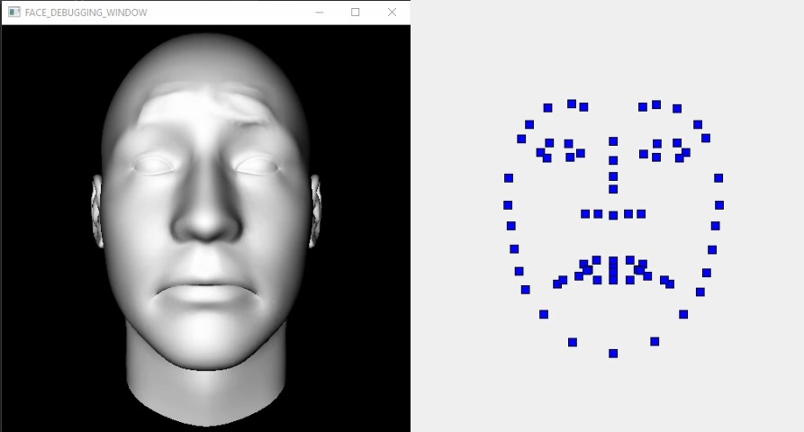

May, 2020
OPENGL FACE DEFORMATION AND LANDMARKS EXTRACTOR
Created as a module for NoCap -Markerless motion capture- Graduation project.
MODULE DESCRIPTION
The module’s purpose is to load a 3D face model with its blendshapes, deform the face
using
the blendshapes’ values, project this face on a 2D plane and finally return the facial
landmarks’ position after projection.
The module should act as a black box that gets expected facial blend- shapes, identity
blendshapes position and rotation then outputs the facial landmarks projected on a 2D
plane
corresponding to these input values.
The module has to be extremely fast to be called more than once in a real time
environment.
APIS AND DEPENDENCIES
To achieve this fast runtime requirmenet, GPU “Graphics Processing Unit” is favourable over the CPU “Central Processing Unit” in this case due to the parallelized nature of this problem, deforming each vertex using blendshapes values and projecting them can be done in parallel with GPU instead of in series with CPU, also rendering the face for debugging comes with no major additional requirements.
That’s why OpenGL is selected, OpenGL (Open Graphics Library) is a cross-language, cross-platform application programming interface (API) for rendering 2D and 3D vector graphics. The API is typically used to interact with a graphics processing unit (GPU), to achieve hardware-accelerated rendering.
Calling the OpenGL from C++ is chosen for two purposes, to easily export this module as .dll/.lib to be used by other modules. Also to achieve as much speed optimization as possible. OpenGL API is called through GLFW, GLEW. Mathematical functions are called through GLM. Importing and exporting assets is implemented using Assimp.
SUB-MODULES
RENDERER
This is a straightforward implementation of the OpenGL rendering technique. It starts with importing the face 3D data from file using assimp. It creates the 3D model data structure with given: vertices position and vertices normals. This data structure is sent to the GPU memory to be used.
The code that will run on the GPU also called Shaders, is then read from a file and sent to the GPU to process the face data previously sent. Using these data, setting the face position and rotation, and setting an arbitrary location for the light source, a face will be shown on the screen. The light effect comes as an output from the dot product of the vertex normals and the light source position.
BLENDSHAPES DEFORMER
While blendshapes as a concept is relatively easy, implementing this part was the most challenging. Blendshapes in the simplest form a list of vectors that are linearly added after multiplying with weights to the original vertex position to get a new shape. The simplest approach was to save the blendshapes of each vertex along with its normals yet this approach won’t work for a large number of blendshapes, right now there are 118 for expressions and more are added for identities, this approach could have worked for a few number of blendshapes.
The solution was to create a large structure that holds all the blendshapes of all vertices together, and save with each vertex the index it should look up within this structure. The structure using OpenGL is called a Texture and data read was saved inside one. In the vertex shader program each vertex has access to the whole blendshapes texture -dealt with as array-, uses its saved index to get what values it should add from this blendshapes by multiplying by array of weights with same values across all vertices, the C++ code provides it in runtime.
PROJECTION FEEDBACK
So far the data is inside our GPU, yet we need to get this data back to be used by other modules (optimizer/regressor), the way to do this is using a transform feedback buffer. A transform Feedback is the process of capturing Primitives generated by the Vertex Processing step, recording data from those primitives into Buffer Objects. This allows one to preserve the post-transform rendering state of an object and resubmit this data multiple times. This feedback buffer will select a property in the shader, in this case we create a property of vector2 for projected values. Using this method will calculate all the vertices projected positions, but we only need the landmarks values.
To get only the landmarks projections values, we need to know their indices in the array, while Assimp changes the indices of vertices while importing, as the 3D model has faces of quads and OpenGL works best with tris. The approach taken was to use blender to export the required vertices as positions not indices and on the C++ side, each vertex is calculating its distance to the required landmarks positions, if the distance is nearly zero then this is a landmarks vertex and saves its index.